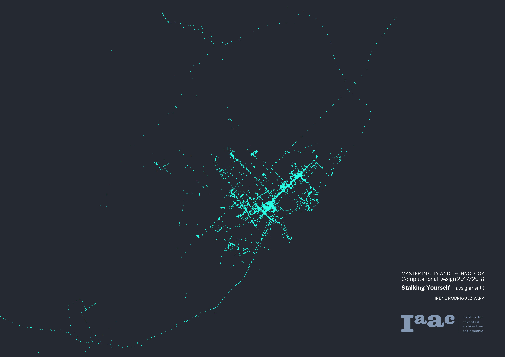
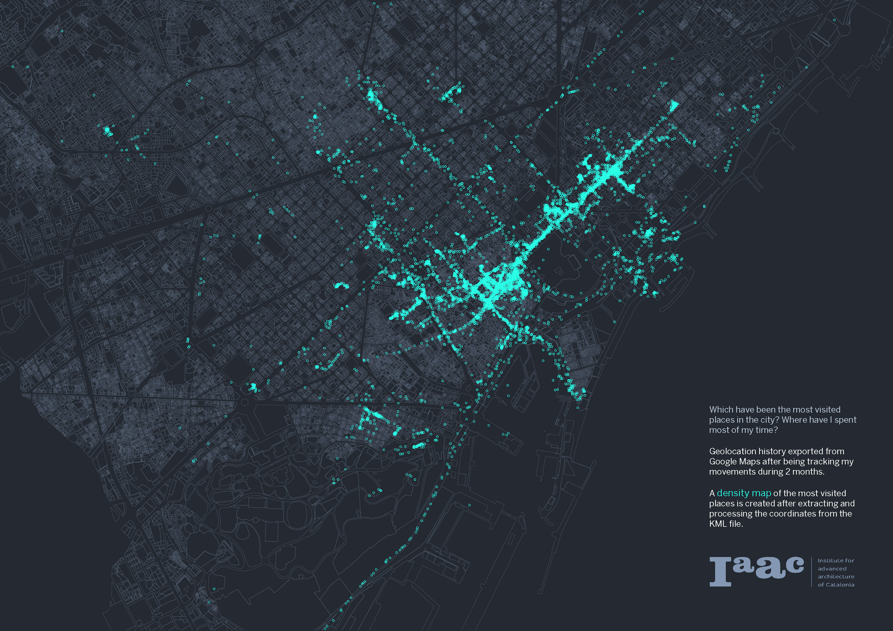
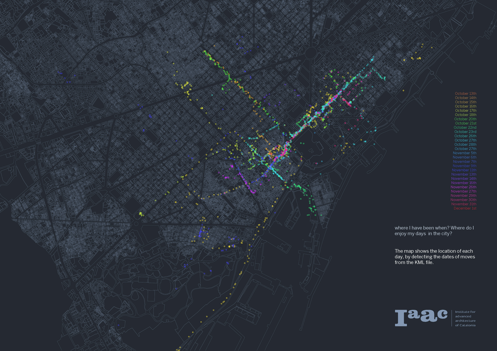
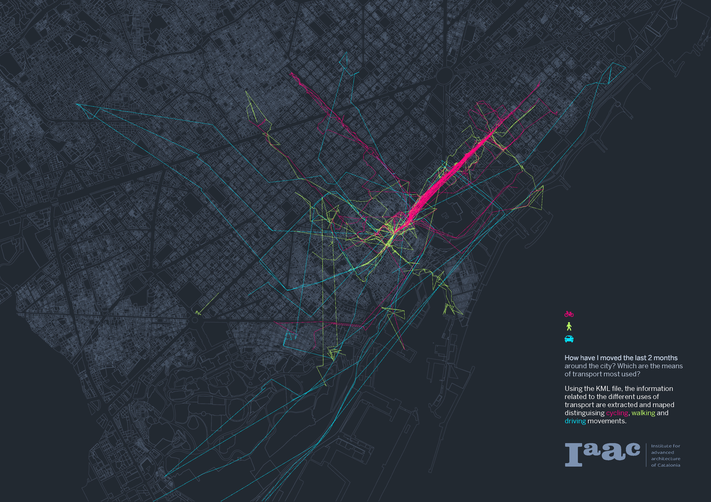
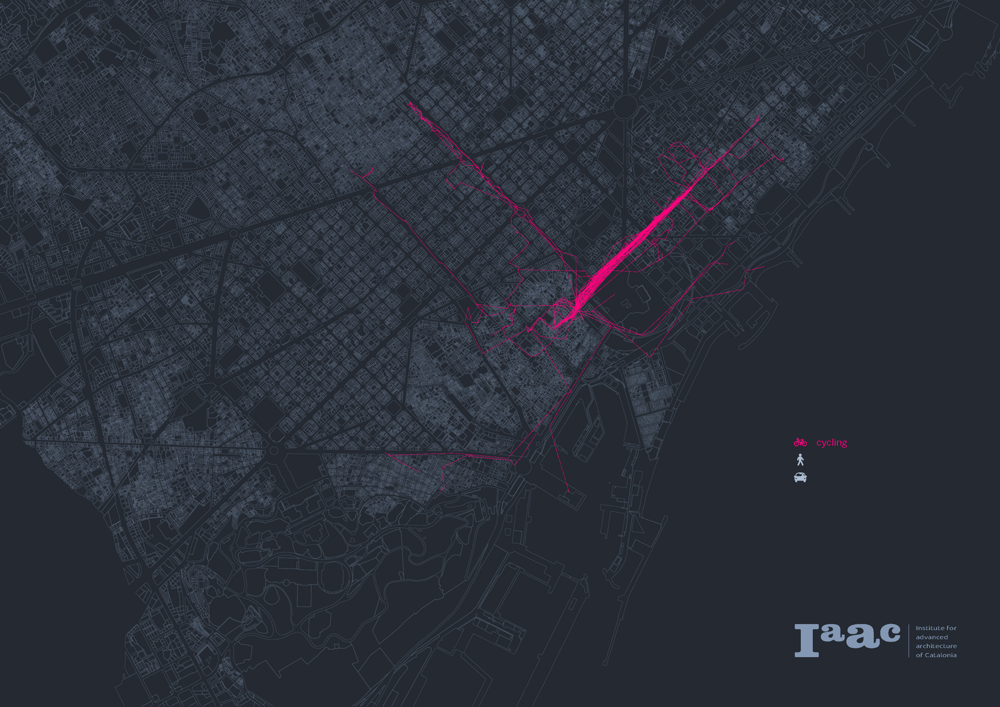
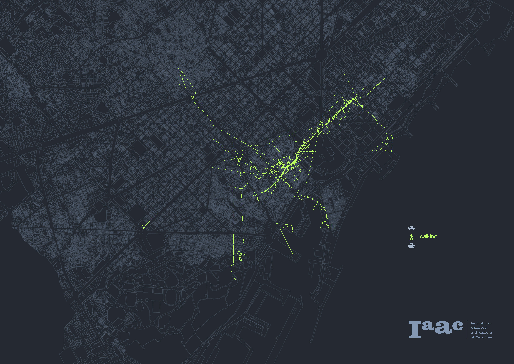
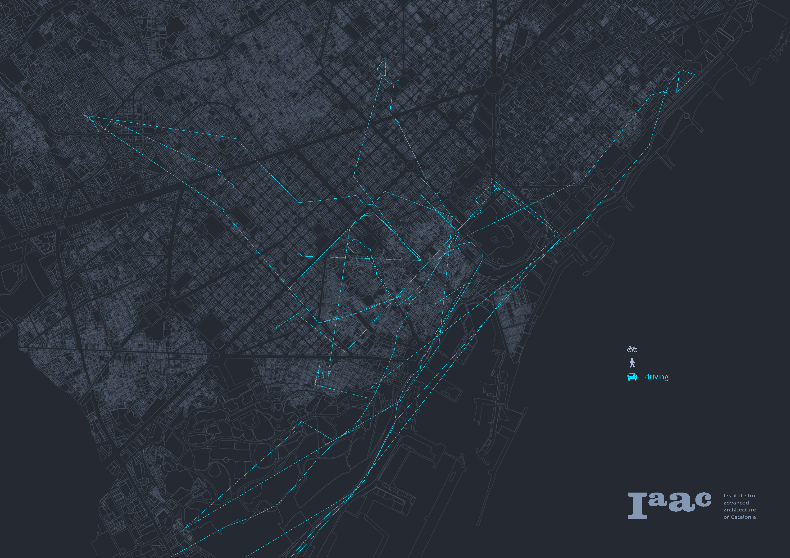
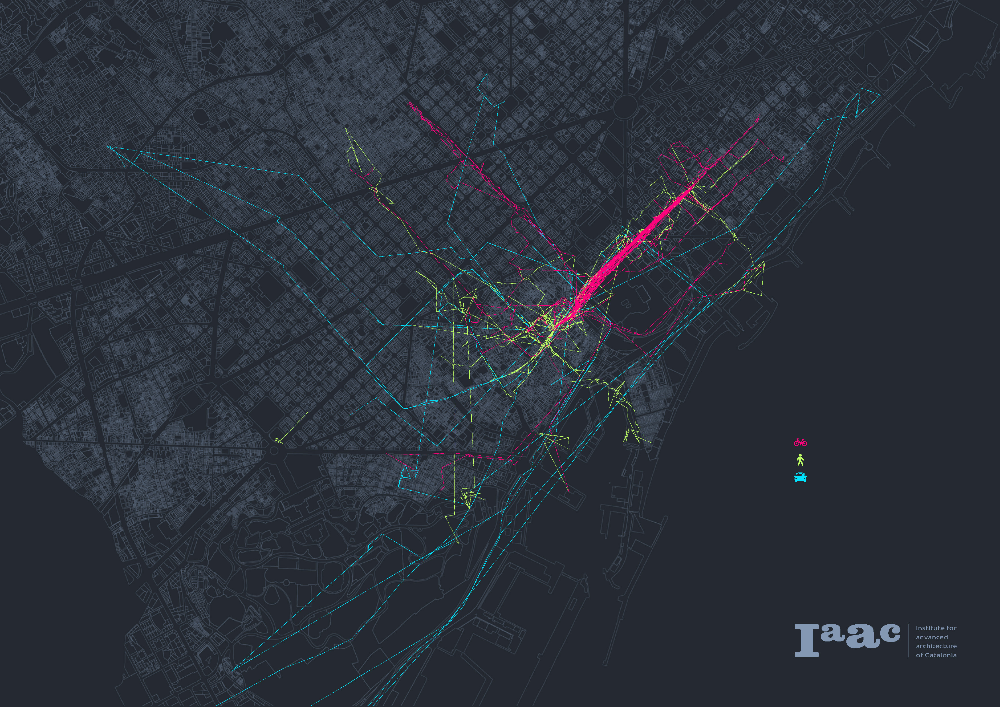
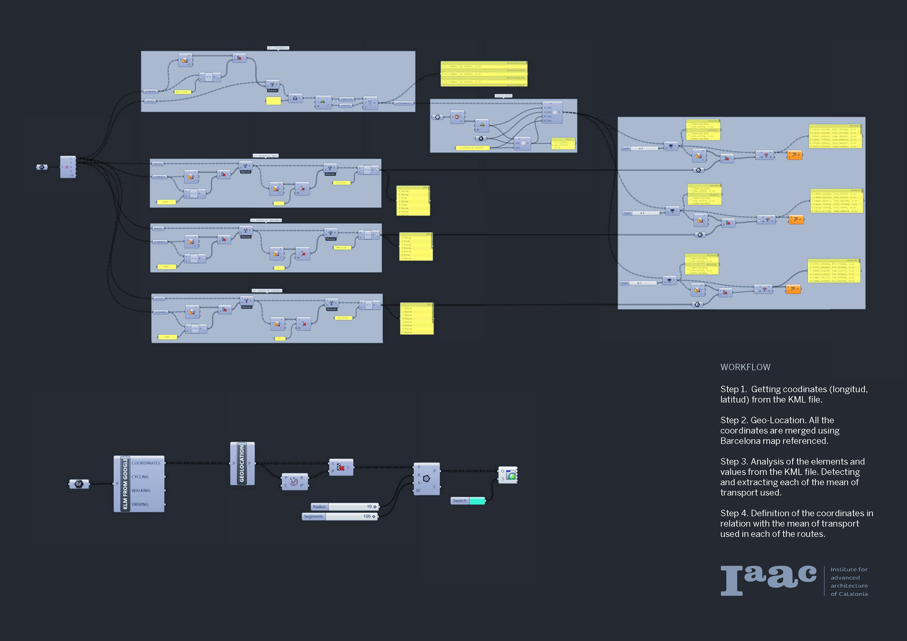
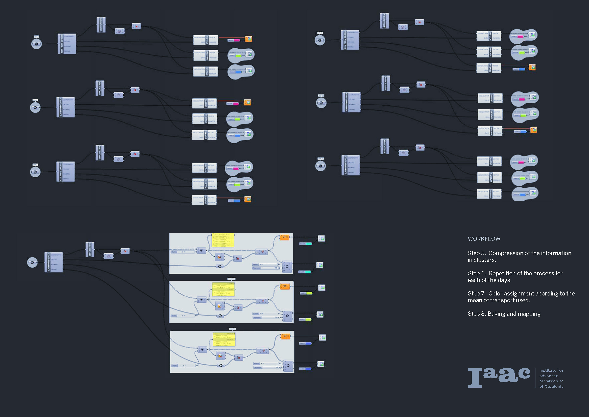

Cities give us the chance to discover them, answering those questions by tracking ourselfs, using Google Maps or Moves App and mapping the analysis, will help us to know better about ourselves and how we understand a new and still unknown environment.
Project developed by: Irene Rodríguez Vara